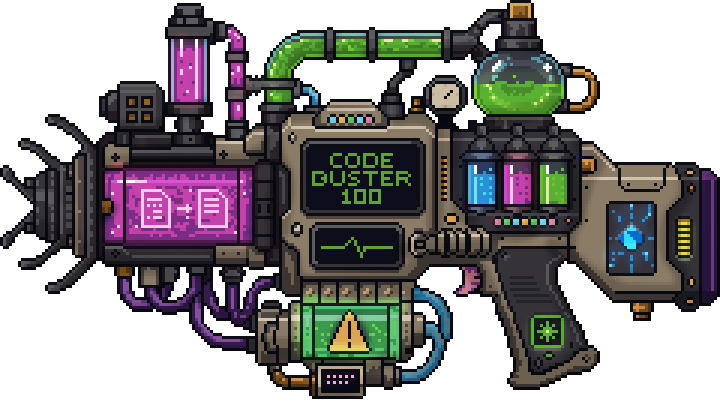

Keep every change consistent with the codebase.
Drift less.
Understand the existing structure, follow established patterns, and review each change for duplication, architectural issues, and UI drift.

brew install tool-bunker/tap/code-buster
Installs the native Apple Silicon build. Dart is not required.
* Code Buster recognizes 15 languages. Analysis depth varies by language and rule family. Review current support →
Powerful today. Still evolving.
Use Code Buster for local exploration, AI context, and reviewing changes before handoff. Until version 1.0.0, do not rely on it as a blocking quality gate in production pipelines. CI and report integrations are available for evaluation and non-blocking visibility.
Understand the system before you reshape it
See how files, modules, and responsibilities fit together before changing them. Code Buster surfaces relationships and concentrated risk that are difficult to recover one file at a time.
- Trace dependencies and paths between files.
- Find cycles, dead code, duplication, and complexity.
- Help human and AI contributors follow existing boundaries.
Review every change for drift
Run Code Buster again after editing. It gives developers and AI coding agents another chance to catch inconsistent implementations, hidden coupling, and organizational decay before handoff.
- Spot repeated UI styles, component bypasses, and design-token drift.
- Surface architectural issues, duplication, and newly dead code.
- Let AI coding agents inspect their own work before review.